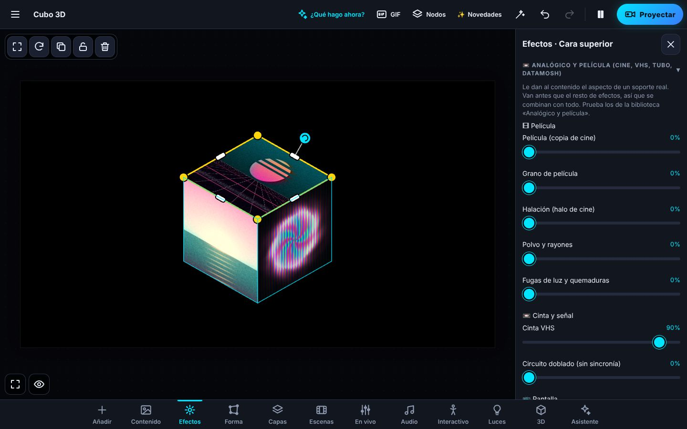

<title>LumaMap</title>
<meta name="claude:viewport-fit-sides" content="cover">
<meta name="description" content="LumaMap: video mapping gratis. Cine, VHS, tubo y datamosh en directo, redes de nodos que se construyen con una frase y agentes de IA por MCP. Windows, Mac, Android y navegador.">
<link rel="preconnect" href="https://fonts.googleapis.com">
<link rel="preconnect" href="https://fonts.gstatic.com" crossorigin>
<link rel="stylesheet" href="https://fonts.googleapis.com/css2?family=Archivo:wdth,wght@125,700;125,800;125,900&family=Geist:wght@400;500;600;700&family=Geist+Mono:wght@400;500;600&display=swap">
<style>
/* Concepto: una tienda de efectos de video de estudio (fondo de sala oscura, titulares anchos de
   cartel, fichas en mono y botones de luz lima), con LumaMap y sus efectos como los productos. */
:root {
  --bg: #08090b;          /* negro de sala */
  --bg-2: #101213;        /* tarjetas */
  --bg-3: #171a1b;        /* tarjetas por encima */
  --line: #24282a;        /* bordes */
  --ink: #f5f4ee;         /* texto: blanco roto */
  --dim: #c4c8c3;         /* texto secundario */
  --mute: #8d938f;        /* notas */
  --lime: #b5f06e;        /* la luz: botones y lo destacado */
  --lime-2: #7fd16b;      /* sombra del botón */
  --lime-ink: #10170a;    /* texto sobre lima */
  --mint: #7ee2a8;        /* etiquetas en mono */
  --wide: "Archivo", "Arial Black", "Helvetica Neue", Arial, sans-serif;
  --body: "Geist", "Segoe UI", system-ui, -apple-system, sans-serif;
  --mono: "Geist Mono", ui-monospace, "SFMono-Regular", Menlo, Consolas, monospace;
  --gut: max(16px, env(safe-area-inset-left, 0px));
  --gut-r: max(16px, env(safe-area-inset-right, 0px));
  color-scheme: dark;
}
* { box-sizing: border-box; }
html { scroll-behavior: smooth; }
body { background: var(--bg); color: var(--ink); font: 400 16px/1.55 var(--body); -webkit-font-smoothing: antialiased; }
body::before { content: ""; position: fixed; inset: 0 0 auto; height: env(safe-area-inset-top, 0px); z-index: 20; background: var(--bg); }
a { color: inherit; }
a:focus-visible, button:focus-visible, summary:focus-visible, input:focus-visible, label:focus-within { outline: 2px solid var(--lime); outline-offset: 3px; border-radius: 6px; }
img { display: block; max-width: 100%; }
.wrap { max-width: 1280px; margin: 0 auto; padding-left: var(--gut); padding-right: var(--gut-r); }
.narrow { max-width: 1100px; }
h1, h2, h3, .wide { font-family: var(--wide); font-stretch: 125%; font-weight: 800; letter-spacing: -0.018em; line-height: 1.02; text-wrap: balance; margin: 0; }
p { margin: 0; }
.eyebrow { font: 500 10.5px/1.3 var(--mono); letter-spacing: .16em; text-transform: uppercase; color: var(--mint); }
.lede { color: var(--dim); font-size: 18px; max-width: 58ch; }
.mono { font-family: var(--mono); }
.pill { display: inline-flex; align-items: center; justify-content: center; gap: 8px; padding: 13px 24px; border-radius: 999px; font: 650 16px/1 var(--body); text-decoration: none; border: 0; cursor: pointer; color: var(--lime-ink);
  background: linear-gradient(180deg, #d4ff9a 0%, var(--lime) 45%, var(--lime-2) 100%);
  box-shadow: 0 0 0 1px #c9f98f inset, 0 10px 30px -8px color-mix(in srgb, var(--lime) 55%, transparent), 0 0 24px -6px color-mix(in srgb, var(--lime) 70%, transparent); transition: transform .15s, box-shadow .15s; }
.pill:hover { transform: translateY(-1px); box-shadow: 0 0 0 1px #d9ffa8 inset, 0 14px 34px -8px color-mix(in srgb, var(--lime) 70%, transparent), 0 0 32px -4px color-mix(in srgb, var(--lime) 80%, transparent); }
.pill.block { width: 100%; padding-block: 15px; font-size: 17px; }
.ghost { display: inline-flex; align-items: center; gap: 8px; padding: 9px 16px; border-radius: 999px; border: 1px solid var(--line); background: color-mix(in srgb, var(--bg) 60%, transparent); color: var(--ink); font: 500 13px/1 var(--body); text-decoration: none; cursor: pointer; }
.ghost:hover { border-color: var(--mute); }
.chip { display: inline-flex; align-items: center; padding: 3px 7px; border-radius: 5px; border: 1px solid var(--line); font: 600 10px/1.2 var(--mono); letter-spacing: .08em; color: var(--dim); }
.u { text-decoration: underline; text-underline-offset: 3px; text-decoration-color: var(--mute); font-size: 14px; }
.u:hover { text-decoration-color: var(--ink); }
hr.rule { border: 0; border-top: 1px solid var(--line); margin: 0; }

/* ---------- barra de arriba ---------- */
.topbar { position: sticky; top: env(safe-area-inset-top, 0px); z-index: 10; background: color-mix(in srgb, var(--bg) 88%, transparent); backdrop-filter: blur(12px); border-bottom: 1px solid var(--line); }
.topbar .wrap { display: grid; grid-template-columns: 1fr auto 1fr; align-items: center; padding-block: 12px; gap: 16px; }
.topbar nav { display: flex; gap: 22px; }
.topbar nav a { font: 600 11px/1 var(--body); letter-spacing: .1em; text-transform: uppercase; text-decoration: none; color: var(--ink); opacity: .9; }
.topbar nav a:hover { opacity: 1; color: var(--lime); }
.brand { display: flex; flex-direction: column; align-items: center; text-decoration: none; line-height: 1; }
.brand b { font: 800 21px/1 var(--wide); font-stretch: 125%; letter-spacing: -.02em; }
.brand small { font: 500 8px/1 var(--mono); letter-spacing: .5em; margin-top: 3px; color: var(--dim); padding-left: .5em; }
.topbar .right { justify-self: end; }
.topbar .pill { padding: 9px 16px; font-size: 13px; }
@media (max-width: 820px) { .topbar nav { display: none; } .topbar .wrap { grid-template-columns: auto 1fr; } .brand { align-items: flex-start; } }

/* ---------- portada ---------- */
.hero { position: relative; overflow: hidden; border-bottom: 1px solid var(--line); }
.hero .bgimg { position: absolute; inset: 0; background: center/cover no-repeat url(img/hero.jpg); filter: saturate(1.1); transform: scale(1.04); }
.hero::after { content: ""; position: absolute; inset: 0; background:
  linear-gradient(180deg, color-mix(in srgb, var(--bg) 25%, transparent) 0%, color-mix(in srgb, var(--bg) 45%, transparent) 55%, var(--bg) 100%),
  repeating-linear-gradient(90deg, #ffffff07 0 1px, transparent 1px 48px), repeating-linear-gradient(0deg, #ffffff07 0 1px, transparent 1px 48px); }
.hero .wrap { position: relative; z-index: 1; display: flex; flex-direction: column; align-items: center; text-align: center; gap: 16px; padding-block: clamp(70px, 12vw, 150px) clamp(36px, 6vw, 64px); }
.hero h1 { font-size: clamp(40px, 6.4vw, 84px); font-weight: 900; text-shadow: 0 4px 40px #000c; max-width: 14ch; }
.hero .by { font: 500 11px var(--mono); letter-spacing: .14em; text-transform: uppercase; }
.hero .lede { text-align: center; color: #e4e8ec; text-shadow: 0 2px 16px #000; }
.hero .pill { margin-top: 10px; }
.runs { display: flex; flex-direction: column; align-items: center; gap: 12px; margin-top: clamp(40px, 8vw, 90px); }
.runs p { font-size: 13px; color: var(--dim); }
.runs .row { display: flex; gap: clamp(14px, 3vw, 34px); flex-wrap: wrap; justify-content: center; font: 800 18px/1 var(--wide); font-stretch: 125%; color: var(--ink); opacity: .9; }

/* ---------- la colección ---------- */
.coll { padding-block: 40px 90px; }
.coll .head { display: flex; justify-content: space-between; align-items: baseline; gap: 16px; padding-bottom: 14px; border-bottom: 1px solid var(--line); margin-bottom: 26px; }
.coll .head h2 { font: 600 17px var(--body); letter-spacing: 0; font-stretch: 100%; }
.grid { display: grid; grid-template-columns: repeat(3, minmax(0, 1fr)); gap: 18px; }
.card { display: flex; flex-direction: column; border: 1px solid var(--line); border-radius: 18px; background: var(--bg-2); overflow: hidden; min-width: 0; }
.card .media { position: relative; aspect-ratio: 1 / 1; overflow: hidden; display: grid; place-items: center; perspective: 900px; }
.card .media::before { content: ""; position: absolute; inset: -20px; background: var(--img) center/cover; filter: blur(16px) brightness(.55) saturate(1.2); transform: scale(1.1); }
.card .media::after { content: ""; position: absolute; inset: 0; background: repeating-linear-gradient(0deg, #0000 0 2px, #0003 2px 3px); pointer-events: none; }
.box { --w: clamp(120px, 14vw, 172px); --h: calc(var(--w) * 1.2667); --d: calc(var(--w) * 0.24); position: relative; z-index: 1; width: var(--w); height: var(--h); transform-style: preserve-3d; transform: rotateX(-7deg) rotateY(-26deg); transition: transform .5s cubic-bezier(.2,.7,.2,1); }
.card:hover .box { transform: rotateX(-5deg) rotateY(-14deg) translateY(-4px); }
.box > i { position: absolute; display: block; }
.box .front { inset: 0; background: #111 var(--img) center/cover; transform: translateZ(calc(var(--d) / 2)); box-shadow: 0 30px 60px -20px #000; overflow: hidden; border-radius: 2px; }
.box .front::after { content: ""; position: absolute; inset: 0; background: linear-gradient(180deg, #0000 55%, #000c 100%), linear-gradient(115deg, #ffffff22 0%, #0000 35%); }
.box .front b { position: absolute; left: 8%; right: 8%; bottom: 10%; z-index: 1; font: 900 calc(var(--w) * 0.105)/1 var(--wide); font-stretch: 125%; letter-spacing: -.03em; color: #fff; overflow-wrap: anywhere; text-shadow: 0 2px 10px #000; }
.box .front em { position: absolute; left: 8%; bottom: 4.5%; z-index: 1; font: 500 7px/1 var(--mono); font-style: normal; letter-spacing: .14em; color: #fffc; }
.box .front .lm { position: absolute; top: 6%; left: 8%; z-index: 1; font: 800 9px/1 var(--wide); font-stretch: 125%; color: #fff; padding: 3px 5px; border: 1px solid #fff9; border-radius: 3px; background: #0006; }
.box .side { top: 0; bottom: 0; width: var(--d); left: calc(50% - var(--d) / 2); background: linear-gradient(90deg, #0a0c0b, #171b19); transform: rotateY(-90deg) translateZ(calc(var(--w) / 2)); display: grid; place-items: center; }
.box .side span { writing-mode: vertical-rl; transform: rotate(180deg); font: 900 clamp(9px, 1.3vw, 14px)/1 var(--wide); font-stretch: 125%; color: #fff; letter-spacing: -.01em; white-space: nowrap; }
.box .top { left: 0; right: 0; height: var(--d); top: calc(50% - var(--d) / 2); background: #1d2220; transform: rotateX(90deg) translateZ(calc(var(--h) / 2)); }
.card .body { display: flex; flex-direction: column; gap: 10px; padding: 18px 18px 18px; flex: 1; }
.card .t { display: flex; justify-content: space-between; align-items: baseline; gap: 12px; }
.card h3 { font: 700 18px/1.2 var(--wide); font-stretch: 125%; text-transform: uppercase; letter-spacing: -.01em; }
.card .price { font: 500 13px var(--body); color: var(--dim); white-space: nowrap; }
.card p { color: var(--dim); font-size: 15px; }
.card .plats { display: flex; gap: 6px; flex-wrap: wrap; margin-top: 2px; }
.card .pill { margin-top: auto; }
@media (max-width: 980px) { .grid { grid-template-columns: repeat(2, minmax(0, 1fr)); } }
@media (max-width: 600px) { .grid { grid-template-columns: 1fr; } }

/* ---------- producto ---------- */
.product { position: relative; border-top: 1px solid var(--line); overflow: hidden; }
.product::before { content: ""; position: absolute; inset: 0 0 auto; height: 560px; background: radial-gradient(60% 80% at 15% 0%, #5a2a1066 0%, #0000 70%), radial-gradient(50% 70% at 85% 10%, #3a1d6a55 0%, #0000 70%), repeating-linear-gradient(90deg, #ffffff06 0 1px, transparent 1px 48px), repeating-linear-gradient(0deg, #ffffff06 0 1px, transparent 1px 48px); pointer-events: none; }
.product .wrap { position: relative; padding-block: 34px 70px; }
.crumb { display: inline-flex; gap: 8px; align-items: center; font-size: 13px; text-decoration: none; color: var(--dim); }
.phead { display: grid; grid-template-columns: minmax(0, 1.55fr) minmax(0, 1fr); gap: 22px; margin-top: 26px; align-items: start; }
.logo-lockup { display: flex; flex-direction: column; gap: 6px; margin-bottom: 18px; }
.logo-lockup b { font: 900 30px/1 var(--wide); font-stretch: 125%; letter-spacing: -.03em; display: flex; align-items: center; gap: 8px; }
.logo-lockup b span { font: 800 12px/1 var(--wide); font-stretch: 125%; border: 1.5px solid var(--ink); border-radius: 4px; padding: 3px 6px; }
.logo-lockup small { font: 600 9px/1 var(--mono); letter-spacing: .3em; color: var(--dim); }
.viewer { border: 1px solid var(--line); border-radius: 16px; overflow: hidden; background: #000; }
.viewer .shot { aspect-ratio: 16 / 10; max-width: 100%; background: #000 center/cover no-repeat; position: relative; }
.viewer .shot img { width: 100%; height: 100%; object-fit: cover; object-position: top left; }
.viewer .tabs { display: grid; grid-template-columns: repeat(3, 1fr); border-top: 1px solid var(--line); }
.viewer .tabs button { padding: 14px 8px; background: transparent; border: 0; border-right: 1px solid var(--line); color: var(--dim); font: 600 13px var(--body); cursor: pointer; }
.viewer .tabs button:last-child { border-right: 0; }
.viewer .tabs button[aria-selected="true"] { color: var(--ink); background: var(--bg-3); box-shadow: inset 0 -2px 0 var(--lime); }
.buy { display: flex; flex-direction: column; gap: 14px; }
.buy h1 { font-size: clamp(26px, 2.6vw, 34px); font-weight: 900; }
.panel { border: 1px solid var(--line); border-radius: 18px; background: color-mix(in srgb, var(--bg-2) 92%, transparent); padding: 16px; display: flex; flex-direction: column; gap: 10px; }
.panel .eyebrow { color: var(--dim); }
.opt { display: grid; grid-template-columns: auto minmax(0, 1fr); gap: 4px 12px; align-items: center; padding: 12px 14px; border: 1px solid var(--line); border-radius: 12px; background: var(--bg); cursor: pointer; }
.opt input { accent-color: var(--lime); width: 16px; height: 16px; margin: 0; }
.opt b { font: 600 15px var(--body); display: flex; gap: 8px; align-items: center; flex-wrap: wrap; }
.opt small { grid-column: 2; color: var(--mute); font-size: 12.5px; }
.opt:has(input:checked) { border-color: var(--mute); background: var(--bg-3); box-shadow: 0 0 0 1px var(--mute) inset; }
.buyrow { display: flex; align-items: baseline; gap: 10px; flex-wrap: wrap; margin-top: 4px; }
.buyrow .big { font: 900 34px/1 var(--wide); font-stretch: 125%; }
.buyrow small { color: var(--dim); font-size: 13px; }
.links { display: flex; gap: 8px 16px; flex-wrap: wrap; font-size: 12.5px; color: var(--dim); }
.links a { text-decoration: none; } .links a:hover { color: var(--ink); text-decoration: underline; }
.links a.on { color: var(--ink); text-decoration: underline; text-underline-offset: 3px; }
@media (max-width: 920px) { .phead { grid-template-columns: 1fr; } }

/* ---------- dónde trabajar ---------- */
.block { padding-block: clamp(56px, 8vw, 96px); border-top: 1px solid var(--line); }
.bh { display: flex; justify-content: space-between; align-items: end; gap: 18px; flex-wrap: wrap; margin-bottom: 26px; }
.bh .t { display: flex; flex-direction: column; gap: 10px; min-width: 0; }
.bh h2 { font-size: clamp(30px, 4.2vw, 54px); font-weight: 900; }
.ways { display: grid; grid-template-columns: repeat(3, minmax(0, 1fr)); gap: 16px; }
.way { border: 1px solid var(--line); border-radius: 16px; overflow: hidden; background: var(--bg-2); display: flex; flex-direction: column; min-width: 0; }
.way .pic { position: relative; aspect-ratio: 16 / 9; background: var(--img) center/cover; }
.way .pic::after { content: ""; position: absolute; inset: 0; background: linear-gradient(180deg, #0000 40%, var(--bg-2) 100%); }
.way .num { position: absolute; top: 12px; left: 12px; z-index: 1; font: 500 11px var(--mono); padding: 4px 8px; border-radius: 99px; border: 1px solid #fff5; background: #0007; }
.way .b { padding: 6px 18px 18px; display: flex; flex-direction: column; gap: 8px; flex: 1; }
.way .b .eyebrow { color: var(--mint); }
.way h3 { font-size: 24px; font-weight: 900; display: flex; align-items: center; gap: 10px; flex-wrap: wrap; }
.way p { color: var(--dim); font-size: 15px; }
.way .foot { margin-top: auto; padding-top: 12px; border-top: 1px solid var(--line); font-size: 12.5px; color: var(--mute); }
.under { display: flex; justify-content: space-between; gap: 16px; flex-wrap: wrap; margin-top: 16px; font-size: 13px; color: var(--mute); }
@media (max-width: 900px) { .ways { grid-template-columns: 1fr; } }

/* ---------- mira la diferencia ---------- */
.cmp { position: relative; aspect-ratio: 16 / 9; max-width: 100%; border-radius: 16px; overflow: hidden; border: 1px solid var(--line); background: #000; touch-action: pan-y; cursor: ew-resize; user-select: none; box-shadow: 0 0 0 6px #ffffff05; }
.cmp canvas { position: absolute; inset: 0; width: 100%; height: 100%; display: block; }
.cmp .split { position: absolute; top: 0; bottom: 0; width: 1.5px; background: #ffffffd0; pointer-events: none; }
.cmp .knob { position: absolute; top: 50%; width: 38px; height: 38px; margin: -19px 0 0 -19px; border-radius: 50%; background: #f5f4ee; color: #111; display: grid; place-items: center; font: 700 14px var(--mono); pointer-events: none; box-shadow: 0 4px 18px #0009; }
.cmp .tag { position: absolute; top: 14px; padding: 6px 11px; border-radius: 999px; font: 500 11px var(--body); background: #0b0c0cd0; color: #fff; pointer-events: none; }
.cmp .tag.l { left: 14px; } .cmp .tag.r { right: 14px; }
.cmp .play { position: absolute; left: 14px; bottom: 14px; z-index: 2; padding: 7px 12px; border-radius: 999px; border: 0; background: #0b0c0cd0; color: #fff; font: 600 12px var(--body); cursor: pointer; }
.looks { display: flex; gap: 8px; flex-wrap: wrap; margin-top: 16px; align-items: center; }
.look { padding: 8px 13px; border-radius: 999px; border: 1px solid var(--line); background: var(--bg-2); color: var(--ink); font: 500 13px var(--body); cursor: pointer; }
.look[aria-pressed="true"] { border-color: var(--lime); color: var(--lime); box-shadow: 0 0 0 1px var(--lime) inset; }
.looks label { margin-left: auto; display: flex; gap: 10px; align-items: center; font: 400 12px var(--mono); color: var(--mute); }
.looks input[type=range] { width: 180px; accent-color: var(--lime); }

/* ---------- todo incluido ---------- */
.bundle { border: 1px solid var(--line); border-radius: 22px; padding: clamp(18px, 3vw, 28px); background: radial-gradient(120% 140% at 0% 0%, #10261a 0%, var(--bg-2) 46%, var(--bg-2) 100%); display: grid; grid-template-columns: minmax(0, .8fr) minmax(0, 2fr); gap: 26px; }
.bundle .l { display: flex; flex-direction: column; gap: 12px; min-width: 0; }
.bundle h2 { font-size: clamp(26px, 3vw, 36px); font-weight: 900; }
.bundle .l p { color: var(--dim); font-size: 14px; }
.minis { display: grid; grid-template-columns: repeat(4, minmax(0, 1fr)); gap: 12px; }
.mini { border: 1px solid var(--line); border-radius: 14px; overflow: hidden; background: var(--bg); min-width: 0; }
.mini.on { border-color: color-mix(in srgb, var(--lime) 70%, var(--line)); box-shadow: 0 0 0 1px color-mix(in srgb, var(--lime) 40%, transparent) inset; }
.mini .im { aspect-ratio: 4 / 3; background: var(--img) center/cover; position: relative; }
.mini .im::after { content: "✓"; position: absolute; top: 8px; right: 8px; width: 20px; height: 20px; border-radius: 50%; display: grid; place-items: center; background: var(--lime); color: var(--lime-ink); font: 800 11px var(--body); }
.mini .tx { padding: 10px 12px 12px; display: flex; flex-direction: column; gap: 2px; }
.mini b { font: 700 13px var(--body); }
.mini small { color: var(--mint); font-size: 12px; }
.total { grid-column: 1 / -1; display: flex; align-items: center; justify-content: space-between; gap: 18px; flex-wrap: wrap; border-top: 1px solid var(--line); padding-top: 18px; }
.total .l2 { font-size: 13px; color: var(--mint); }
.total .r { display: flex; align-items: center; gap: 14px; flex-wrap: wrap; }
.total .big { font: 900 44px/1 var(--wide); font-stretch: 125%; }
.total .save { font: 700 12px var(--body); padding: 4px 9px; border-radius: 6px; background: var(--lime); color: var(--lime-ink); }
@media (max-width: 980px) { .bundle { grid-template-columns: 1fr; } .minis { grid-template-columns: repeat(2, minmax(0, 1fr)); } }

/* ---------- presets ---------- */
.split2 { display: grid; grid-template-columns: minmax(0, .8fr) minmax(0, 1.2fr); gap: clamp(24px, 4vw, 56px); align-items: center; }
.split2 .t { display: flex; flex-direction: column; gap: 14px; min-width: 0; }
.split2 h2 { font-size: clamp(30px, 4vw, 52px); font-weight: 900; }
.frame { border: 1px solid var(--line); border-radius: 16px; overflow: hidden; background: #000; }
.frame img { width: 100%; height: auto; }
.frame .cap { padding: 10px 14px; font-size: 12px; color: var(--mute); border-top: 1px solid var(--line); background: var(--bg-2); }
@media (max-width: 900px) { .split2 { grid-template-columns: 1fr; } }

/* ---------- escribe y se construye (demo) ---------- */
.term { border: 1px solid var(--line); border-radius: 16px; background: var(--bg-2); overflow: hidden; min-width: 0; }
.term .bar { display: flex; justify-content: space-between; gap: 12px; padding: 10px 14px; border-bottom: 1px solid var(--line); font: 500 10.5px var(--mono); color: var(--dim); letter-spacing: .1em; text-transform: uppercase; }
.term .bar b { color: var(--lime); font-weight: 600; }
.prompt { padding: 16px 16px 6px; font: 400 16px/1.5 var(--body); min-height: 3.4em; }
.prompt .caret { display: inline-block; width: 2px; height: 1.1em; background: var(--lime); vertical-align: -3px; animation: blink 1s steps(1) infinite; }
@keyframes blink { 50% { opacity: 0; } }
.graph { position: relative; height: 230px; margin: 6px 16px 16px; }
.graph svg { position: absolute; inset: 0; width: 100%; height: 100%; overflow: visible; }
.node { position: absolute; width: 132px; padding: 8px 10px; border-radius: 10px; background: var(--bg); border: 1px solid var(--line); font: 600 13px/1.2 var(--body); transform: translateY(6px); opacity: 0; transition: opacity .35s, transform .35s; }
.node.on { opacity: 1; transform: none; }
.node small { display: block; font: 500 9.5px var(--mono); letter-spacing: .08em; text-transform: uppercase; margin-bottom: 3px; }
.node.top small { color: #c4a6ff; } .node.chop small { color: var(--mint); } .node.out { border-color: var(--lime); } .node.out small { color: var(--lime); }
.wire { fill: none; stroke: var(--mute); stroke-width: 1.6; stroke-dasharray: 220; stroke-dashoffset: 220; transition: stroke-dashoffset .5s ease-out; }
.wire.chop { stroke: var(--mint); stroke-dasharray: 4 5; stroke-dashoffset: 0; opacity: 0; transition: opacity .4s; }
.wire.on { stroke-dashoffset: 0; } .wire.chop.on { opacity: .9; }
.term .say { padding: 0 16px 16px; font: 400 12.5px var(--mono); color: var(--dim); min-height: 2.6em; }

/* ---------- agentes ---------- */
.code { position: relative; border: 1px solid var(--line); border-radius: 12px; background: #050606; }
.code pre { margin: 0; padding: 16px; overflow-x: auto; font: 400 13px/1.6 var(--mono); color: var(--ink); white-space: pre; }
.code .copy { position: absolute; top: 8px; right: 8px; }
.tools { display: grid; grid-template-columns: repeat(2, minmax(0, 1fr)); gap: 0 18px; font: 400 12.5px/1.9 var(--mono); color: var(--dim); }
.tools span::before { content: "› "; color: var(--lime); }
.stack { display: flex; flex-direction: column; gap: 14px; min-width: 0; }

/* ---------- biblioteca ---------- */
.lib .bh h2 { font-size: clamp(22px, 2.6vw, 30px); }
.lib .form { display: flex; gap: 10px; flex-wrap: wrap; align-items: center; padding: 8px; border: 1px solid var(--line); border-radius: 999px; background: var(--bg-2); max-width: 520px; }
.lib .form span { padding-left: 10px; color: var(--dim); font-size: 14px; flex: 1; min-width: 0; }
.tiles { display: grid; grid-template-columns: repeat(3, minmax(0, 1fr)); gap: 16px; margin-top: 26px; }
.tile figure { margin: 0; }
.tile .im { aspect-ratio: 1 / 1; border-radius: 12px; background: #000 var(--img) center/cover; border: 1px solid var(--line); }
.tile figcaption { margin-top: 8px; font-size: 13px; color: var(--dim); display: flex; justify-content: space-between; gap: 10px; }
.tile figcaption span { color: var(--mute); font-family: var(--mono); font-size: 11px; }
@media (max-width: 720px) { .tiles { grid-template-columns: repeat(2, minmax(0, 1fr)); } }

/* ---------- preguntas ---------- */
.faq { display: grid; grid-template-columns: minmax(0, .7fr) minmax(0, 1.3fr); gap: clamp(24px, 4vw, 56px); }
.faq details { border-bottom: 1px solid var(--line); padding-block: 16px; }
.faq summary { cursor: pointer; font: 600 16px/1.4 var(--body); list-style: none; display: flex; justify-content: space-between; gap: 14px; }
.faq summary::-webkit-details-marker { display: none; }
.faq summary::after { content: "+"; font: 400 20px/1 var(--mono); color: var(--lime); transition: transform .2s; }
.faq details[open] summary::after { transform: rotate(45deg); }
.faq details p { margin-top: 10px; color: var(--dim); font-size: 15px; max-width: 70ch; }
@media (max-width: 860px) { .faq { grid-template-columns: 1fr; } }

/* ---------- final y pie ---------- */
.final { text-align: center; padding-block: clamp(70px, 10vw, 130px); border-top: 1px solid var(--line); background: radial-gradient(60% 80% at 50% 100%, #12301e 0%, #0000 70%); }
.final h2 { font-size: clamp(34px, 6vw, 76px); font-weight: 900; text-transform: uppercase; }
.final p { color: var(--dim); margin: 14px auto 26px; }
footer { border-top: 1px solid var(--line); padding-block: 40px 50px; }
footer .wrap { display: grid; grid-template-columns: 1.3fr repeat(3, 1fr); gap: 24px; }
footer h4 { margin: 0 0 10px; font: 600 11px var(--mono); letter-spacing: .14em; text-transform: uppercase; color: var(--mute); }
footer ul { list-style: none; margin: 0; padding: 0; display: flex; flex-direction: column; gap: 6px; font-size: 14px; }
footer a { text-decoration: none; color: var(--dim); } footer a:hover { color: var(--ink); }
footer .small { font-size: 12px; color: var(--mute); margin-top: 10px; }
@media (max-width: 760px) { footer .wrap { grid-template-columns: 1fr 1fr; } }

@media (prefers-reduced-motion: reduce) {
  html { scroll-behavior: auto; }
  .box, .pill { transition: none; }
  .prompt .caret { animation: none; }
  .node, .wire { transition: none; }
}
</style>

<header class="topbar">
  <div class="wrap">
    <nav aria-label="Secciones"><a href="#coleccion">Efectos</a><a href="#analogico">Analógico</a><a href="#construye">Nodos</a><a href="#agentes">Agentes</a><a href="#preguntas">Ayuda</a></nav>
    <a class="brand" href="#inicio" aria-label="LumaMap, inicio"><b>LumaMap</b><small>VIDEO MAPPING</small></a>
    <div class="right"><a class="pill" href="#descargar">Descargar gratis</a></div>
  </div>
</header>

<main id="inicio">
  <section class="hero">
    <div class="bgimg" role="img" aria-label="Fondo: una animación synthwave con datamosh, hecha con los efectos de LumaMap"></div>
    <div class="wrap">
      <h1>Pon luz en cualquier cosa</h1>
      <span class="by">Video mapping · por LumaMap</span>
      <p class="lede">El programa de video mapping con efectos de cine, VHS, tubo y datamosh en directo, nodos como TouchDesigner que se construyen con una frase y agentes de IA.</p>
      <a class="pill" href="#coleccion">Ver la colección ↗</a>
      <div class="runs">
        <p>Un solo programa. Gratis y de código abierto. Funciona en</p>
        <div class="row" aria-label="Plataformas"><span>Windows</span><span>macOS</span><span>Android</span><span>Navegador</span></div>
      </div>
    </div>
  </section>

  <section class="coll" id="coleccion">
    <div class="wrap">
      <div class="head"><h2>La colección</h2><span class="mono" style="font-size:12px;color:var(--mute)">6 · todo incluido en LumaMap</span></div>
      <div class="grid">
        <!--CARDS-->
      </div>
    </div>
  </section>

  <section class="product" id="analogico">
    <div class="wrap">
      <a class="crumb" href="#coleccion">← La colección</a>
      <div class="phead">
        <div>
          <div class="logo-lockup"><b>LUMAMAP <span>ANALÓGICO</span></b><small>CINE · CINTA · TUBO · TIEMPO</small></div>
          <div class="viewer">
            <div class="shot"></div>
            <div class="tabs" role="tablist" aria-label="Ver">
              <button role="tab" aria-selected="true" data-shot="img/app-fx.jpg" data-alt="LumaMap con un cubo mapeado y el panel de efectos abierto">El programa</button>
              <button role="tab" aria-selected="false" data-shot="img/app-nodes.jpg" data-alt="El editor de nodos de LumaMap construyendo una red a partir de una frase">Nodos</button>
              <button role="tab" aria-selected="false" data-shot="img/hero.jpg" data-alt="Una animación con datamosh y VHS, renderizada por LumaMap">Resultado</button>
            </div>
          </div>
        </div>
        <div class="buy" id="descargar">
          <h1>LumaMap: cine, VHS y tubo para tu mapping.</h1>
          <div class="panel">
            <span class="eyebrow">Elige dónde trabajar</span>
            <label class="opt"><input type="radio" name="plat" value="win" checked><b>Windows <span class="chip">10 · 11</span></b><small>Instalador con accesos directos y plugins FFGL de Resolume.</small></label>
            <label class="opt"><input type="radio" name="plat" value="mac"><b>Mac <span class="chip">M1+</span><span class="chip">INTEL</span></b><small>Apple Silicon o Intel. El mismo proyecto que en Windows.</small></label>
            <label class="opt"><input type="radio" name="plat" value="android"><b>Android <span class="chip">8.0+</span></b><small>Móvil y tablet. Se actualiza sola en Android 12 o más.</small></label>
            <label class="opt"><input type="radio" name="plat" value="web"><b>Navegador <span class="chip">WEBGL2</span></b><small>Sin instalar: Node.js 18 y Chrome, Edge o Firefox.</small></label>
            <div class="buyrow"><span class="big">Gratis</span><small>Una descarga · sin suscripción · licencia MIT</small></div>
            <a class="pill block" id="dlBtn" href="https://github.com/cristhianlujan45-blip/Video-Mapping-/releases/download/lumamap-latest/LumaMap-Setup.exe">Descargar para Windows</a>
            <span class="mono" id="dlFile" style="font-size:11.5px;color:var(--mute)">LumaMap-Setup.exe</span>
            <div class="links"><a href="#biblioteca">Los 28 looks</a><a href="#analogico-diferencia">Mira la diferencia</a><a href="https://github.com/cristhianlujan45-blip/Video-Mapping-/releases/tag/lumamap-latest">Todas las descargas</a><a href="https://github.com/cristhianlujan45-blip/Video-Mapping-">Código</a></div>
          </div>
        </div>
      </div>
    </div>
  </section>

  <section class="block">
    <div class="wrap">
      <div class="bh"><div class="t"><span class="eyebrow">Elige dónde trabajar</span><h2>Tu mapping. Efectos analógicos.</h2></div><span class="chip">WIN · MAC · ANDROID · WEB</span></div>
      <div class="ways">
        <div class="way"><div class="pic" style="--img:url(img/box-pantalla.jpg)"><span class="num">PC y Mac</span></div><div class="b"><span class="eyebrow">Para el show</span><h3>Escritorio <span class="chip">WIN</span><span class="chip">MAC</span></h3><p>Varios proyectores, luces DMX, plugins de Resolume y exportar el show a 4K. Se actualiza solo al cerrar.</p><div class="foot">Windows 10/11 · macOS (Apple Silicon e Intel)</div></div></div>
        <div class="way"><div class="pic" style="--img:url(img/box-cinta.jpg)"><span class="num">Móvil</span></div><div class="b"><span class="eyebrow">En el bolsillo</span><h3>Android <span class="chip">APK</span></h3><p>Mapea desde el móvil o la tablet, con la cámara para lo interactivo y el mismo proyecto que en el PC.</p><div class="foot">Android 8.0 o más · WebView al día</div></div></div>
        <div class="way"><div class="pic" style="--img:url(img/box-nodos.jpg)"><span class="num">Sin instalar</span></div><div class="b"><span class="eyebrow">En la red local</span><h3>Navegador <span class="chip">WEB</span></h3><p>Arranca el servidor y abre la página: mando remoto desde el móvil y salida por red para OBS o TouchDesigner.</p><div class="foot">Node.js 18 · Chrome, Edge o Firefox</div></div></div>
      </div>
      <div class="under"><span>Un proyecto se abre igual en todos. Varios equipos a la vez, sin límite de activaciones.</span><a class="u" href="#descargar">Descargas ↗</a></div>
    </div>
  </section>

  <section class="block" id="analogico-diferencia">
    <div class="wrap">
      <div class="bh"><div class="t"><h2 style="font-size:clamp(24px,2.6vw,32px)">Mira la diferencia.</h2></div></div>
      <div class="cmp" id="cmp" role="img" aria-label="Comparador: a la izquierda la imagen original, a la derecha con el efecto elegido">
        <canvas id="cmpc"></canvas>
        <div class="split" id="split"></div>
        <div class="knob" id="knob" aria-hidden="true">⟷</div>
        <span class="tag l">original</span><span class="tag r" id="tagR">Cine de 35 mm</span>
        <button class="play" id="pause" type="button">Pausa</button>
      </div>
      <div class="looks" role="group" aria-label="Elige un efecto">
        <button class="look" aria-pressed="true" data-look="1">Cine de 35 mm</button>
        <button class="look" aria-pressed="false" data-look="2">Cinta VHS gastada</button>
        <button class="look" aria-pressed="false" data-look="3">Monitor de tubo</button>
        <button class="look" aria-pressed="false" data-look="4">Pared de LED</button>
        <button class="look" aria-pressed="false" data-look="5">Circuito doblado</button>
        <button class="look" aria-pressed="false" data-look="6">Blanco y negro de cine</button>
        <label for="splitRange">línea <input id="splitRange" type="range" min="0" max="100" value="50"></label>
      </div>
    </div>
  </section>

  <section class="block">
    <div class="wrap">
      <div class="bundle">
        <div class="l">
          <span class="eyebrow">Todo incluido</span>
          <h2>Todo LumaMap. Gratis.</h2>
          <p>Lo que en otros sitios son productos separados aquí viene en el mismo programa, para siempre y sin códigos de descuento.</p>
        </div>
        <div class="minis">
          <div class="mini on"><div class="im" style="--img:url(img/box-cinta.jpg)"></div><div class="tx"><b>Cinta y señal</b><small>Incluido</small></div></div>
          <div class="mini on"><div class="im" style="--img:url(img/box-pelicula.jpg)"></div><div class="tx"><b>Película</b><small>Incluido</small></div></div>
          <div class="mini on"><div class="im" style="--img:url(img/box-mosh.jpg)"></div><div class="tx"><b>Datamosh y tiempo</b><small>Incluido</small></div></div>
          <div class="mini on"><div class="im" style="--img:url(img/box-pantalla.jpg)"></div><div class="tx"><b>Pantallas</b><small>Incluido</small></div></div>
        </div>
        <div class="total">
          <span class="l2">Más los nodos, los agentes de IA, las luces DMX, el audio por pistas y el mapping.</span>
          <div class="r"><span class="big">0 €</span><span class="save">Código abierto</span><a class="pill" href="#descargar">Descargar LumaMap</a></div>
        </div>
      </div>
    </div>
  </section>

  <section class="block">
    <div class="wrap split2">
      <div class="t">
        <span class="eyebrow">Presets · directo · exportar</span>
        <h2>Tu próximo look. Tus controles.</h2>
        <p class="lede">Empieza con uno de los 28 looks y hazlo tuyo: grano, halación, color corrido, rejilla del tubo, fuerza del datamosh. Cada control se mueve con MIDI, con el golpe de la música o con una pista de audio, y el show se exporta fotograma a fotograma en H.264, H.265 o HAP.</p>
        <a class="u" href="#biblioteca">Ver los 28 looks ↗</a>
      </div>
      <div class="frame"><div class="cap">Efectos → «📼 Analógico y película» · las tres caras del cubo con VHS, película y tubo</div></div>
    </div>
  </section>

  <section class="block" id="construye">
    <div class="wrap split2">
      <div class="t">
        <span class="eyebrow">Nuevo · editor de nodos</span>
        <h2>Escríbelo. Se construye solo.</h2>
        <p class="lede">Describe lo que quieres ver y la red de nodos se arma delante de ti, pieza a pieza, hasta la salida. Con IA entiende cualquier cosa; sin IA, frases sencillas en español o inglés.</p>
        <p style="color:var(--mute);font-size:14px">LumaMap revisa cada pieza antes de tocar tu red: operadores que existen, valores en su rango, cables sin bucles. Un «Deshacer» lo quita todo de una vez. Ctrl+Espacio en el editor de nodos.</p>
      </div>
      <div class="term" aria-live="polite">
        <div class="bar"><span>✨ Escribe y se construye</span><b id="buildSrc">sin IA</b></div>
        <div class="prompt"><span id="typed"></span><span class="caret" aria-hidden="true"></span></div>
        <div class="graph" id="graph"><svg id="wires" aria-hidden="true"></svg></div>
        <div class="say" id="say"></div>
      </div>
    </div>
  </section>

  <section class="block" id="agentes">
    <div class="wrap split2">
      <div class="t">
        <span class="eyebrow">Nuevo · MCP</span>
        <h2>Que tu agente de IA lo maneje.</h2>
        <p class="lede">Claude Code, Cursor o Claude Desktop usan LumaMap como lo haría una persona: ven el proyecto, construyen redes, ajustan, ponen efectos, proyectan y miran el resultado como imagen.</p>
        <p style="color:var(--mute);font-size:14px">Solo se conecta un programa de tu mismo equipo, con una clave secreta en tu carpeta de usuario. En la app: ☰ → Ayuda y sistema → «Conectar un agente de IA». Con la app instalada no hace falta Node.</p>
      </div>
      <div class="stack">
        <div class="code"><pre id="mcpCmd">claude mcp add lumamap -- node /ruta/a/lumamap/server/mcp.js</pre><button class="ghost copy" type="button" data-copy="mcpCmd">Copiar</button></div>
        <div class="tools" aria-label="Herramientas">
          <span>lumamap_status</span><span>build_from_text</span><span>apply_plan</span><span>list_operators</span>
          <span>create_node</span><span>connect</span><span>set_params</span><span>move_with</span>
          <span>get_network</span><span>delete_nodes</span><span>project_network</span><span>list_effects</span>
          <span>set_effects</span><span>list_animations</span><span>set_animation</span><span>go_scene</span><span>get_image</span>
        </div>
      </div>
    </div>
  </section>

  <section class="block lib" id="biblioteca">
    <div class="wrap narrow">
      <div class="bh"><div class="t"><h2>28 looks. Gratis.</h2><p class="lede" style="font-size:15px">Listos en la biblioteca de efectos, en la categoría «Analógico y película». Se combinan con todo y funcionan en directo y al exportar.</p></div></div>
      <div class="lib form"><span>Vienen dentro de LumaMap: sin registro, sin correo.</span><a class="pill" href="#descargar">Descargar</a></div>
      <div class="tiles">
        <!--TILES-->
      </div>
    </div>
  </section>

  <section class="block" id="preguntas">
    <div class="wrap faq">
      <div style="display:flex;flex-direction:column;gap:10px"><span class="eyebrow">Preguntas</span><h2 style="font-size:clamp(28px,3.6vw,44px)">Lo que más se pregunta.</h2></div>
      <div>
        <details><summary>¿Qué es LumaMap?</summary><p>Un programa de video mapping: proyectas video, animaciones y efectos sobre paredes, objetos o escenarios ajustando cuatro esquinas o una malla. Trae efectos analógicos (cine, VHS, tubo, datamosh), un editor de nodos como TouchDesigner, luces DMX, audio por pistas e interactivo con cámara.</p></details>
        <details><summary>¿Cuánto cuesta?</summary><p>Nada. Es gratis y de código abierto (licencia MIT), también para trabajos comerciales. Lo que proyectas y exportas es tuyo.</p></details>
        <details><summary>¿Qué incluye cada versión?</summary><p>Lo mismo en todas. El escritorio (Windows y Mac) suma los plugins FFGL de Resolume en Windows, varias salidas a la vez y la actualización al cerrar.</p></details>
        <details><summary>¿Necesito una tarjeta gráfica potente?</summary><p>No. Todo va en WebGL2 y los efectos trabajan al tamaño real de cada superficie. La prueba de velocidad elige la calidad sola; al exportar en 4K se dibuja fotograma a fotograma, tarde lo que tarde.</p></details>
        <details><summary>¿En qué formatos exporta?</summary><p>MP4 H.264, MP4 H.265 (la mitad de peso, si el equipo lo codifica) y HAP .mov para programas de VJ como Resolume. El audio puede salir también aparte en WAV.</p></details>
        <details><summary>¿Funciona sin internet?</summary><p>Sí. El programa, los efectos y «Escribe y se construye» sin IA funcionan sin conexión, y también la IA local con Ollama. Solo la IA en la nube necesita internet.</p></details>
        <details><summary>¿Es seguro conectar un agente de IA?</summary><p>Solo puede conectarse un programa de tu mismo equipo, con una clave que LumaMap guarda en tu carpeta de usuario. Cada cambio pasa las mismas comprobaciones que la interfaz y se deshace con Ctrl+Z.</p></details>
        <details><summary>¿Cómo se actualiza?</summary><p>Solo. La versión nueva se descarga sola y se instala al cerrar LumaMap (Windows) o al salir de la app (Android 12 o más). Nunca durante un show, y se puede apagar.</p></details>
      </div>
    </div>
  </section>

  <section class="final">
    <div class="wrap">
      <h2>Cine. VHS. Tubo. Nodos.</h2>
      <p>Ponle LumaMap encima.</p>
      <a class="pill" href="#descargar">Descargar LumaMap ↗</a>
      <p class="mono" style="font-size:12px;color:var(--mute);margin-top:14px">Windows · Mac · Android · Navegador · gratis</p>
    </div>
  </section>
</main>

<footer>
  <div class="wrap">
    <div><a class="brand" href="#inicio" style="align-items:flex-start"><b>LumaMap</b><small>VIDEO MAPPING</small></a><p class="small">Código abierto · licencia MIT</p></div>
    <div><h4>Efectos</h4><ul><li><a href="#analogico">Analógico y película</a></li><li><a href="#biblioteca">28 looks</a></li><li><a href="#analogico-diferencia">Comparador</a></li></ul></div>
    <div><h4>Programa</h4><ul><li><a href="#construye">Escribe y se construye</a></li><li><a href="#agentes">Agentes de IA</a></li><li><a href="#preguntas">Preguntas</a></li></ul></div>
    <div><h4>Descargas</h4><ul><li><a href="#descargar">Windows · Mac · Android</a></li><li><a href="https://github.com/cristhianlujan45-blip/Video-Mapping-/releases/tag/lumamap-latest">Todas las versiones</a></li><li><a href="https://github.com/cristhianlujan45-blip/Video-Mapping-">Código fuente</a></li></ul></div>
  </div>
</footer>

<script>
(() => {
  const reduce = matchMedia("(prefers-reduced-motion: reduce)").matches;
  let paused = reduce;
  const visible = new Map();
  const io = "IntersectionObserver" in window ? new IntersectionObserver((es) => es.forEach(e => visible.set(e.target, e.isIntersecting)), { rootMargin: "100px" }) : null;
  const onScreen = (el) => !io || visible.get(el) !== false;

  /* ---------------- Visor del producto ---------------- */
  const shot = document.getElementById("shot");
  document.querySelectorAll(".viewer .tabs button").forEach(b => b.addEventListener("click", () => {
    document.querySelectorAll(".viewer .tabs button").forEach(x => x.setAttribute("aria-selected", x === b ? "true" : "false"));
    shot.src = b.dataset.shot; shot.alt = b.dataset.alt;
  }));

  /* ---------------- Descargar: según dónde trabajes ---------------- */
  const REL = "https://github.com/cristhianlujan45-blip/Video-Mapping-/releases/download/lumamap-latest/";
  const DL = { win: ["Descargar para Windows", REL + "LumaMap-Setup.exe", "LumaMap-Setup.exe"], mac: ["Descargar para Mac (Apple Silicon)", REL + "LumaMap-Mac-AppleSilicon.dmg", "LumaMap-Mac-AppleSilicon.dmg · Intel: LumaMap-Mac-Intel.dmg"],
    android: ["Descargar para Android", REL + "LumaMap-Android.apk", "LumaMap-Android.apk"], web: ["Ver el código para el navegador", "https://github.com/cristhianlujan45-blip/Video-Mapping-", "node lumamap/server/index.js"] };
  const dlBtn = document.getElementById("dlBtn"), dlFile = document.getElementById("dlFile");
  document.querySelectorAll('input[name="plat"]').forEach(r => r.addEventListener("change", () => { const d = DL[r.value]; dlBtn.textContent = d[0]; dlBtn.href = d[1]; dlFile.textContent = d[2]; }));

  /* ---------------- WebGL ---------------- */
  function glProgram(gl, fs) {
    const vs = "attribute vec2 p; varying vec2 uv; void main(){ uv = p * 0.5 + 0.5; gl_Position = vec4(p, 0.0, 1.0); }";
    const mk = (t, s) => { const sh = gl.createShader(t); gl.shaderSource(sh, s); gl.compileShader(sh); if (!gl.getShaderParameter(sh, gl.COMPILE_STATUS)) throw new Error(gl.getShaderInfoLog(sh)); return sh; };
    const pr = gl.createProgram();
    gl.attachShader(pr, mk(gl.VERTEX_SHADER, vs)); gl.attachShader(pr, mk(gl.FRAGMENT_SHADER, "precision highp float; varying vec2 uv;\n" + fs));
    gl.linkProgram(pr); gl.useProgram(pr);
    const b = gl.createBuffer(); gl.bindBuffer(gl.ARRAY_BUFFER, b);
    gl.bufferData(gl.ARRAY_BUFFER, new Float32Array([-1, -1, 1, -1, -1, 1, 1, 1]), gl.STATIC_DRAW);
    const loc = gl.getAttribLocation(pr, "p"); gl.enableVertexAttribArray(loc); gl.vertexAttribPointer(loc, 2, gl.FLOAT, false, 0, 0);
    return (n) => gl.getUniformLocation(pr, n);
  }
  function fit(canvas, gl) {
    const d = Math.min(devicePixelRatio || 1, 2), w = Math.round(canvas.clientWidth * d), h = Math.round(canvas.clientHeight * d);
    if (canvas.width !== w || canvas.height !== h) { canvas.width = w; canvas.height = h; gl.viewport(0, 0, w, h); }
  }

  /* ---------------- Mira la diferencia: la imagen de LumaMap y los efectos en directo ---------------- */
  const photo = new Image(); photo.src = "img/cmp-src.jpg";
  const src = document.createElement("canvas"); src.width = 1280; src.height = 720;
  const g = src.getContext("2d");
  function paint(t) {
    if (!photo.complete || !photo.naturalWidth) { g.fillStyle = "#222"; g.fillRect(0, 0, 1280, 720); return; }
    const z = 1.08 + 0.05 * Math.sin(t * 0.13), x = (1280 * z - 1280) * (0.5 + 0.5 * Math.sin(t * 0.21)), y = (720 * z - 720) * 0.5;
    g.drawImage(photo, -x, -y, 1280 * z, 720 * z);
    // Un destello que cruza (para que el datamosh y los ecos tengan movimiento que seguir).
    const fx = ((t * 140) % 1600) - 160, gr = g.createRadialGradient(fx, 300, 0, fx, 300, 120);
    gr.addColorStop(0, "#ffffffaa"); gr.addColorStop(1, "#ffffff00"); g.fillStyle = gr; g.fillRect(fx - 130, 170, 260, 260);
  }
  const cmp = document.getElementById("cmp"), cv = document.getElementById("cmpc");
  const cgl = cv.getContext("webgl", { premultipliedAlpha: false });
  let split = 0.5, look = 1;
  if (cgl) {
    io?.observe(cmp);
/*CMPSHADER*/
    const tex = cgl.createTexture();
    cgl.bindTexture(cgl.TEXTURE_2D, tex);
    for (const [k, v] of [[cgl.TEXTURE_MIN_FILTER, cgl.LINEAR], [cgl.TEXTURE_MAG_FILTER, cgl.LINEAR], [cgl.TEXTURE_WRAP_S, cgl.CLAMP_TO_EDGE], [cgl.TEXTURE_WRAP_T, cgl.CLAMP_TO_EDGE]]) cgl.texParameteri(cgl.TEXTURE_2D, k, v);
    const u = { t: U("t"), split: U("split"), look: U("look"), res: U("res"), tex: U("tex") };
    cgl.uniform1i(u.tex, 0);
    const t0 = performance.now();
    let dirty = true, lastT = 0;
    photo.onload = () => { dirty = true; };
    const draw = (now) => {
      const t = paused ? lastT : (now - t0) / 1000;
      if (onScreen(cmp) && (!paused || dirty)) {
        lastT = t; dirty = false;
        fit(cv, cgl); paint(t);
        cgl.texImage2D(cgl.TEXTURE_2D, 0, cgl.RGBA, cgl.RGBA, cgl.UNSIGNED_BYTE, src);
        cgl.uniform1f(u.t, t); cgl.uniform1f(u.split, split); cgl.uniform1i(u.look, look); cgl.uniform2f(u.res, cv.width, cv.height);
        cgl.drawArrays(cgl.TRIANGLE_STRIP, 0, 4);
      }
      requestAnimationFrame(draw);
    };
    requestAnimationFrame(draw);
    window.__redraw = () => { dirty = true; };
  } else {
    cmp.insertAdjacentHTML("beforeend", '<p style="position:absolute;inset:auto 16px 60px;color:#fff">Este navegador no tiene WebGL: abre la página en Chrome, Edge o Firefox para ver los efectos.</p>');
  }
  const splitEl = document.getElementById("split"), knob = document.getElementById("knob"), range = document.getElementById("splitRange");
  function setSplit(x) { split = Math.max(0, Math.min(1, x)); splitEl.style.left = knob.style.left = (split * 100) + "%"; range.value = Math.round(split * 100); window.__redraw?.(); }
  setSplit(0.5);
  let dragging = false;
  const fromEvent = (e) => { const r = cmp.getBoundingClientRect(); setSplit((e.clientX - r.left) / r.width); };
  cmp.addEventListener("pointerdown", (e) => { if (e.target.closest(".play")) return; dragging = true; cmp.setPointerCapture(e.pointerId); fromEvent(e); });
  cmp.addEventListener("pointermove", (e) => { if (dragging || e.pointerType === "mouse") fromEvent(e); });
  cmp.addEventListener("pointerup", () => { dragging = false; });
  range.addEventListener("input", () => setSplit(range.value / 100));
  const tagR = document.getElementById("tagR");
  document.querySelectorAll(".look").forEach(b => b.addEventListener("click", () => {
    look = +b.dataset.look;
    document.querySelectorAll(".look").forEach(x => x.setAttribute("aria-pressed", x === b ? "true" : "false"));
    tagR.textContent = b.textContent; window.__redraw?.();
  }));
  const pauseBtn = document.getElementById("pause");
  const syncPause = () => { pauseBtn.textContent = paused ? "▶ Play" : "❚❚ Pausa"; window.__redraw?.(); };
  pauseBtn.addEventListener("click", (e) => { e.stopPropagation(); paused = !paused; syncPause(); });
  syncPause();

/*BUILDDEMO*/
  /* ---------------- Copiar ---------------- */
  document.querySelectorAll(".copy").forEach(b => b.addEventListener("click", async () => {
    const el = document.getElementById(b.dataset.copy);
    try { await navigator.clipboard.writeText(el.textContent); b.textContent = "Copiado"; }
    catch { const r = document.createRange(); r.selectNodeContents(el); const s = getSelection(); s.removeAllRanges(); s.addRange(r); b.textContent = "Selecciónalo y copia"; }
    setTimeout(() => { b.textContent = "Copiar"; }, 1800);
  }));
})();
</script>
